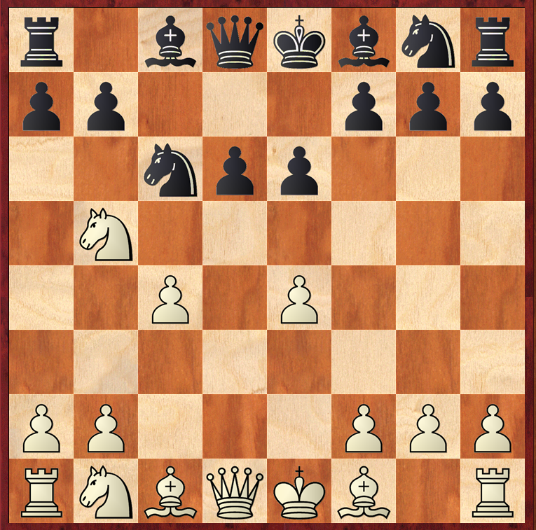
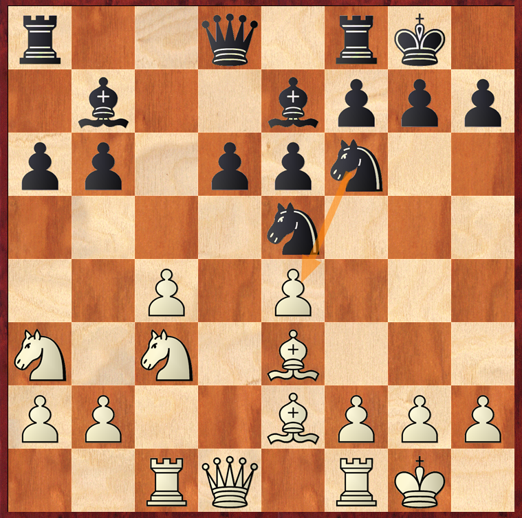
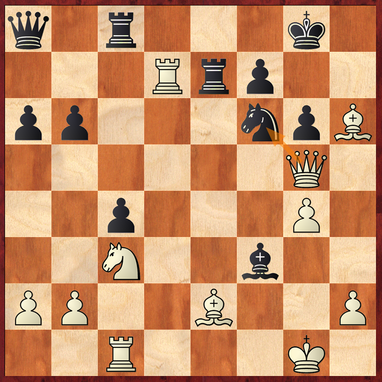

这是本次比赛的第四轮，上一轮棋输给了近两年上升势头很快的雷霆捷，本轮执白棋遇上重庆后起之秀肖依依，力求保和争胜，不丢分才能继续在中上游作战。在此之前与肖依依有过几次对弈，知道肖依依后手对付王兵走西西里的鲍尔逊变例。
1.e4 c5 2.Nf3 e6 3.d4 cd 4.Nd4 Nc6 5.Nb5 d6 6.c4 这也是我对付鲍尔逊比较喜欢走的兵阵，我觉得这样白棋空间会稍大一点，也是个人习惯吧。
6...Nf6 7.N1c3 a6 8.Na3 Be7 9.Be2 0–0 10.0–0 b6 11.Be3 Bb7 12.Rc1 Ne5  13.f3这个局面还有13.f4和13.Qd4，我比较偏向于13.f3巩固e4兵，可能和棋风有关系，虽然这样e2的白格象会憋屈一点，但是我选择f3静观其变，看黑棋接下来e5马的去向，大体方向就是Qb3打击b6兵，再Rfd1打d6兵这样。
13...Qc7 14.Qb3 Ned7 15.Rfd1 Rac8 16.g4?!这步棋赛后分析可能有点冲动，毕竟给自己的国王前也带来一些压力了，电脑分析应该走Nc2、Kh1、Qa4稳一稳。但是g4是我个人偏好，后翼感觉不好进入，只好王翼扑腾一下。
16...h6 17.Qc2 Rfe8 18.Qd2 Qb8 19.Nc2 Qa8?没什么实际意义，e4兵也攻击不到，估计对手也感觉这个棋俩人都在对峙，等着对方先犯错误，走了缓招。应该走Ne5、Nfd7、Nc5这样的铁桶阵，等我犯错误。
20.Nd4 d5?!还是有点着急，黑棋终于忍不住了，感觉黑棋现在冲起中心兵有点准备不足，还是应该Ne5先耗着。
21.ed ed 22.Nf5? dc我自己此时也有点着急了，总感觉黑棋王翼那边有棋，计算不够到位，其实Nf5弃子不够。
23.Bh6?? Bf3??有点忍俊不禁，女子棋手下棋就像坐过山车一样，尤其时间紧张的情况下，总能下出让人目瞪口呆的棋，我走完Bh6的时候就发现黑棋有一步好棋——Bc5,当时心里捏了一把汗，不过肖依依似乎也算错了，漏看了我Ne7直接把黑棋唯一反击利器黑格象先砍掉，直接一步就导致败势。
应该走23...Bc5 ，攻击白棋露出的黑格斜线，因为前面白棋g4兵冲太高了把白格也露出来了。24.Kg2 Re2 25.Qe2 Re8 26.Qf1 gh，得半子并化解了攻势。
24.Ne7! Re7 25.Qg5 g6 26.Rd7!! 致胜一招，把黑棋最后的防守子力连根拔起。
26...Re6 27.Bf327.Re7这招更狠，一个简单的引离战术就解决了。
27...Qf3 28.Rf1 Qg4 29.Qg4 Ng4换了皇后之后感觉整个人神清气爽了，后面黑棋就只能象征性挣扎一下了。
30.Bg5 f6 31.Bh4 g5 32.Bg3 Ne3 33.Rf3 Rce8 34.Nd5应该走34.Bf2 b5 35.Bxe3用象换马，保留住马更灵活，不过区别不大。
34...Nd5 35.Rd5 Kg7 36.h4 gh 37.Bh4 b5 38.Bf2 Rc6 39.Bd4 b4 40.Kf240.a3 c3也可以
40...Ree6 41.Bc5 a5 42.a3 c3 43.bc b3 44.Rg3 Kf7 45.Rd7 Ke8 46.Rb746.Ra7 Kd8 47.Rg8+ Re8 48.Be7
46...Kd8 47.Rg8 Re8 48.Re848.Rb8更残忍,1 – 0 黑棋认输。因为拿下这盘棋，获得宝贵的一分，我才得以在后面几盘棋里遇上几位种子选手，向他们学习了几盘。